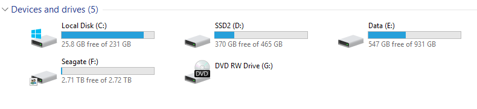
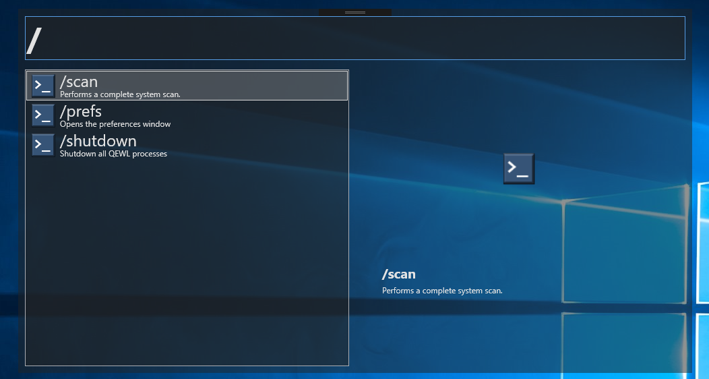

The Project
I wanted to make tool that could find any file or folder on any of my drives. The windows built-in search is terrible at doing this, it only finds a fraction of the files. For this project I decided to use C# as a language and WPF for the UI. I use global keyboard hooks so the window can be shown at any time using the Ctrl+Space hotkey (can be changed in prefs).
Scanning
The heaviest part of this tool is the initial scanning of the drives. This happens when the program launches or when given the /scan command. It takes about 5 - 30 seconds depending on the size and amount of drives. For my system it took 16 seconds to do a full scan of my drives shown below.
The scan code runs on a seperate thread so we don't freeze the main thread and the UI. The drives are then enumerated and scanned in parallel as well.
protected override void OnScan()
{
recDepth = 0;
BackgroundWorker worker = new BackgroundWorker();
Stopwatch timer = Stopwatch.StartNew();
worker.DoWork += (sender, args) =>
{
DriveInfo[] drives = DriveInfo.GetDrives();
IEnumerable<DriveInfo> readyDrives = drives.Where(x => x.IsReady);
Log.Message(string.Format("{0} ready drives detected", readyDrives.Count()));
Parallel.ForEach(readyDrives, (DriveInfo drive) =>
{
Log.Message(string.Format("Scanning drive {0}: [{1}] ASync...", drive.VolumeLabel, drive.Name));
SystemQueryResultItem result = new SystemQueryResultItem(drive.Name);
AddItem(result);
ScanSubDirsAndFiles(drive.RootDirectory, true);
});
};
worker.RunWorkerCompleted += (sender, args) =>
{
SortBigList();
ScanComplete();
Log.Success(string.Format("{0} scan completed in {1} seconds", GetType().Name, timer.Elapsed.TotalSeconds.ToString("F3")));
GC.Collect();
Log.ReportMemoryUsage();
Console.Beep();
};
worker.RunWorkerAsync();
}
The root directory of the drive is passed to the ScanSubDirsAndFiles function which is recursive and attempts to scan the drives in parallel aswell.
private void ScanSubDirsAndFiles(DirectoryInfo parentDir, bool isRoot = false)
{
try
{
IEnumerable<DirectoryInfo> dirs = parentDir.EnumerateDirectories();
IEnumerable<FileInfo> files = parentDir.EnumerateFiles();
// Root folders are filtered and scanned in parallel.
if (isRoot)
{
dirs = dirs.Where(x => !RootIgnorePaths.Contains(x.FullName));
Parallel.ForEach(dirs, (DirectoryInfo dir) =>
{
ScanSubDirsAndFiles(dir);
SystemQueryResultItem result = new SystemQueryResultItem(dir.FullName);
AddItem(result);
});
}
else
{
foreach (DirectoryInfo dir in dirs)
{
ScanSubDirsAndFiles(dir);
SystemQueryResultItem result = new SystemQueryResultItem(dir.FullName);
AddItem(result);
}
}
// Scan files.
foreach (FileInfo file in files)
{
SystemQueryResultItem result = new SystemQueryResultItem(file.FullName);
AddItem(result);
}
}
catch (Exception e)
{
Log.Warning(e.Message);
}
}
Querying
In order to keep memory usage low but still cache all the meta data so the search results are near-instant, I use UTF8 encoding and store the byte[] of a path. This takes up significantly less memory than storing strings and the byte[] can easily be converted back to a string when necesery.
When a search query is performed by the user (he or she types characters in the text box), the following code will run.
protected override void OnQuery(string query)
{
if (IsScanning)
return;
string lowerCaseQuery = query.ToLower();
int closestIndex = -1;
if(_queryWorker.IsBusy)
{
_queryWorker.CancelAsync();
_queryWorker.Dispose();
_queryWorker = new BackgroundWorker();
_queryWorker.WorkerSupportsCancellation = true;
}
_queryWorker.DoWork += (sender, args) =>
{
closestIndex = FindClosestResultIndex(lowerCaseQuery); // heavy CPU
};
_queryWorker.RunWorkerCompleted += (sender, args) =>
{
if (closestIndex != -1)
{
UIResults results = new UIResults();
Log.Message(string.Format("Last query result: {0}", Path.GetFileName(BigResultList[closestIndex].GetPathString())));
for (int i = 0; i < MaxResultsShown; i++)
{
int index = (closestIndex + i);
if (index < BigResultList.Count && index > 0)
{
string path = BigResultList[index].GetPathString();
string file = Path.GetFileName(path);
UIResultItem uiItem = new UIResultItem(true, file, path);
results.Add(uiItem);
}
}
ShowResults(results, lowerCaseQuery);
QueryEnd(results, query);
}
else
{
QueryEnd(null, query);
}
};
_queryWorker.RunWorkerAsync();
}
The FindClosestResultIndex method is what does all the work here. It will recursively try to find the index in the BigResultList that matches closest to the given search query. It will give results while typing, so even when only a couple of characters are typed in, it will usually output a list of good results.
private int FindClosestResultIndex(string query, int startIndex = 0, int substringLength = 1, int closest = -1)
{
if (substringLength > query.Length)
return closest;
string querySubString = query.Substring(0, substringLength);
for (int i = startIndex; i < BigResultList.Count; i++)
{
string name = Path.GetFileName(BigResultList[i].GetPathString()).ToLower();
if (substringLength < name.Length)
{
if (name.Substring(0, substringLength) == querySubString)
{
closest = i;
startIndex = i;
substringLength++;
return FindClosestResultIndex(query, startIndex, substringLength, closest);
}
}
}
substringLength++;
return FindClosestResultIndex(query, startIndex, substringLength, closest);
}
Other Features
I have abstracted the querying away using the QueryHandler base class. It contains virtual methods for implementing different types of query handlers. For searching the file system it uses the SystemQueryHandler but I also implemented something called the CommandQueryHandler which will be run when prefixing a '/'.
I was also planning on making a WebQueryHandler to search the internet when prefixing a '@'. However I froze the development of this project because of a lack of time. Perhaps I will continue working on it in the future.